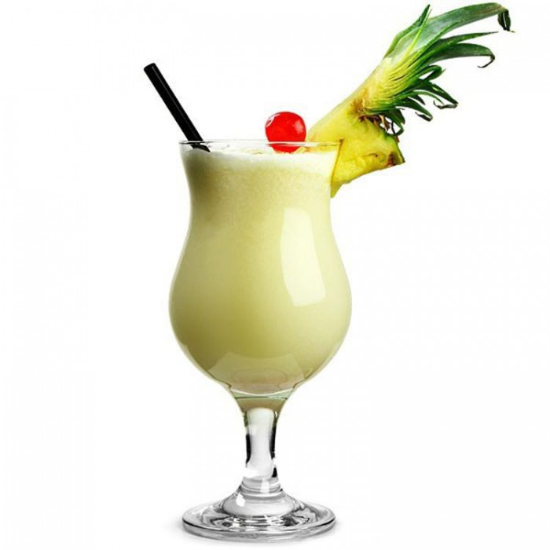

| ГЛАВНАЯ | Маргарита | Голубая лагуна | Зелёная фея | Том Коллинз | Текила Санрайз |
|  |
Способ приготовления:
|
В переводе с испанского "пина колада" означает "процеженный ананас". А на практике сочетание рома, ананасового сока и кокосового молока известно с начала XIX века, а его авторство приписывают пуэрториканскому флибустьеру Роберто Кофреси.
Как именно пиратский напиток превратился в современный коктейль доподлинно неизвестно, зато на вопрос "когда?" можно ответить довольно точно: в 1950-х Pina Colada впервые появилась в карте бара Beachcomber в шикарном отеле Caribbean Hilton все в том же Пуэрто-Рико.
Но вернемся к "процеженному ананасу". В 1954 году Рамон Мончито Марео Перес, бартендер Caribbean Hilton потратил три месяца, чтобы довести до ума рецептуру, прежде чем вписать Pina Colada в барную карту. После чего вся сеть отелей начала его активно продвигать. Еще один герой истории – Рикардо Грасия, бартендер мадридского отделения сети, не раз гастролировавший в пуэрториканском "Хилтоне", придумал подавать Pina Colada в вычищенных изнутри кокосах и ананасах. Впрочем, тут в стройную хронологию событий вмешивается ресторан La Barrachina, что в старой части города Сан-Хуан. Согласно табличке, и по сей день висящей над дверью, именно здесь в 1963 году застенчивый бармен Рамон никак не решался познакомиться с красоткой и в результате выразил свои чувства, создав специально для нее знойный коктейль. Девушка якобы не осталась равнодушной, немедленно приняла предложение руки и сердца от поклонника. Все бы ничего, но к тому моменту Pina Colada фигурировала в барной карте Carribbean Hilton уже девятый год.
В 1978 году Pina Colada была официально объявлена достоянием Коста-Рики и главным национальным коктейлем. Еще через год мировые чарты взорвала композиция группы Escape под названием Pina Colada Song. С тех пор полноценный отдых под тропическим солнцем немыслим без бокала этого напитка, украшенного бумажным зонтиком
К рецепту